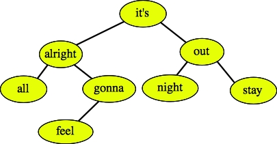
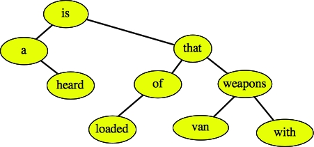

Question 1On the right, I have listed the class specification for a a doubly linked list node, and the protected data and public method Erase() from the Dlist class. As you recall, this implements circular, doubly linked lists with a sentinel node.Your job in this question is to implement the Erase() method. Please do so on the answer sheet. |
|
Question 2 |
|
Suppose we are hashing and have the hash table pictured above. We have two hash functions, h1() and h2(), such that h1("Solid") = 32159678, and h2("Solid") = 75079104.
For each hash function and collision resolution strategy, state the location in the table where "Solid" will be inserted, and the number of probes that it takes to find that location.
Question 3Take a look at the program to the right:Part A: What will the output of this program be if standard input is:
Part B: If you simply replaced the word vector with the word deque in the program, it would produce the same output on the same input. Explain why this would be better or worse. Describe an input file which could be fed into the two programs (vector and deque) that would show markedly different behavior. Explain what this behavior is and why. |
|
| 7x + 45 = O(x) |
In other words, give me the precise definition of big-O, and then use that defintion to show that the above statement is true.
Part B: Behold the following binary search tree.
|  |
If the activity in a node is printing its string, tell me the results of performing a preorder traversal of this tree and a postorder traversal.
Part C: Draw the tree that results when the node "it's" is deleted. Again, this is not an AVL tree. It's a regular binary search tree.
|  |
You are given a vector <string> names and a vector <string> votes. The i-th rabbit is named names[i], and he/she voted for the rabbit named votes[i]. All rabbits have distinct names. Return the name of the rabbit who received the most valid votes. If there is a tie for most votes, return an empty string instead.
DEFINITION
Class:RabbitVoting
Method:getWinner
Parameters:vector <string>, vector <string>
Returns:string
Method signature:string getWinner(vector <string> names, vector <string> votes)
NOTES
-Rabbit names are case-sensitive. See example 4 for clarification.
CONSTRAINTS
-names will contain between 2 and 100000 elements, inclusive.
-Each element of names will contain between 1 and 50 characters, inclusive.
-Each character in names will be a letter ('A'-'Z', 'a'-'z').
-All elements of names will be distinct.
-votes will contain the same number of elements as names.
-Each element of votes will be the same as one of the elements of names.
EXAMPLES
0)
{ "Alice", "Bill", "Carol", "Dick" }
{ "Bill", "Dick", "Alice", "Alice" }
Returns: "Alice"
2 votes for Alice, 1 for Bill, 0 for Carol, and 1 for Dick. Alice got the most.
1)
{ "Alice", "Bill", "Carol", "Dick" }
{ "Carol", "Carol", "Bill", "Bill" }
Returns: ""
Bill and Carol are tied with 2 votes each.
2)
{ "Alice", "Bill", "Carol", "Dick" }
{ "Alice", "Alice", "Bill", "Bill" }
Returns: "Bill"
Alice's vote for herself is invalid. 1 valid vote for Alice, 2 for Bill.
3)
{ "Alice", "Bill" }
{ "Alice", "Bill" }
Returns: ""
All votes are invalid.
4)
{ "WhiteRabbit", "whiterabbit", "whiteRabbit", "Whiterabbit" }
{ "whiteRabbit", "whiteRabbit", "whiteRabbit", "WhiteRabbit" }
Returns: "whiteRabbit"
These four are different names.